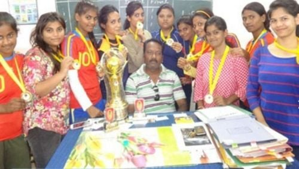
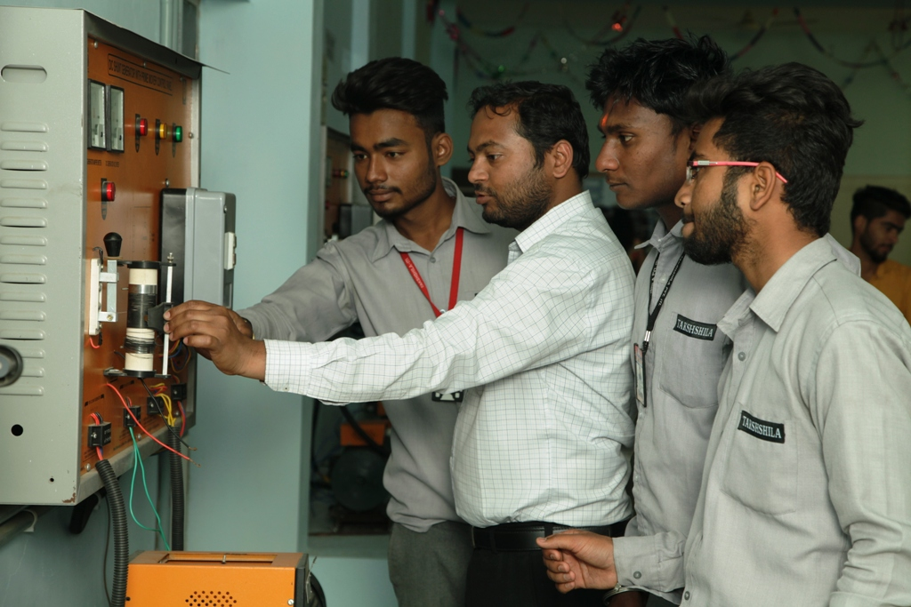
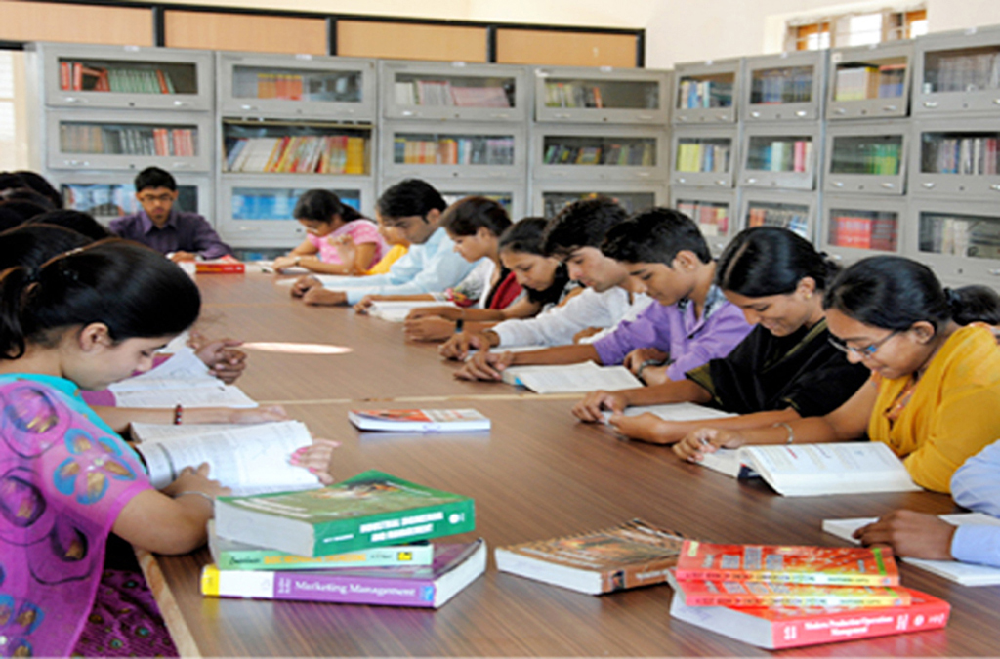
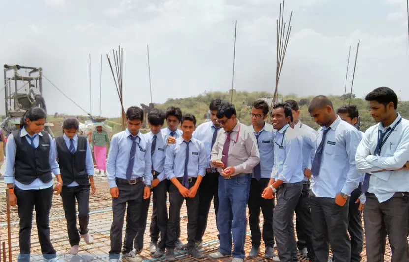

Facilities
The Library has large volumes of text and reference books on a variety of subjects: Computer Science, Physics, Electronics, Mathematics, Management, Commerce, Physical Education, Literature, Educational Books.
Apart from books, students have access to the latest Magazines, International Journals, Encyclopedia Britannica and other, Newspapers and Research papers. The library also stocks a huge collection of
educational CD-ROMS and Old copies of important periodicals. Each student has issued four library tickets.
One book can be borrowed for a period of twentyfive days on one library ticket. Besides, another reading material on various topics is provided.
The college has sports facilities for all students.
The college has an auditorium facility for events and seminars.
Wi-Fi facility is made available to both students and faculty members. Bandwidth has been increased to 30 Mbps.

Sports
The Library has large volumes of text and reference books on a variety of subjects
Library
The Library has large volumes of text and reference books on a variety of subjects

Team Work
The Library has large volumes of text and reference books on a variety of subjects
What Our Student Says
The college overall provides a good opportunity and a peaceful environment for the students in all around development of them along with the academics portion.
But it would have been great if the college can organised more placements drives for all the students of different course in the college.

My campus is very long and my college teachers are so nice behavior from a student.
Hina

My campus is very long and my college teachers are so nice behavior from a student.
Sumit kumar